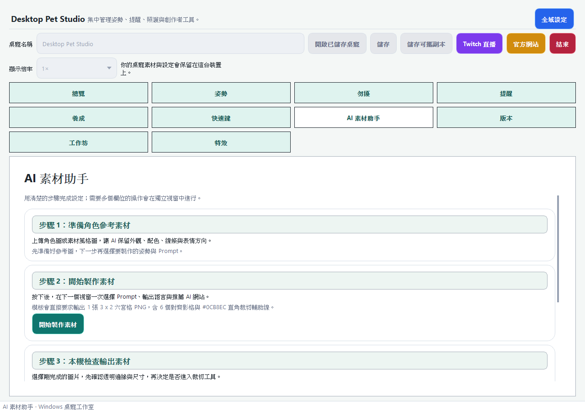
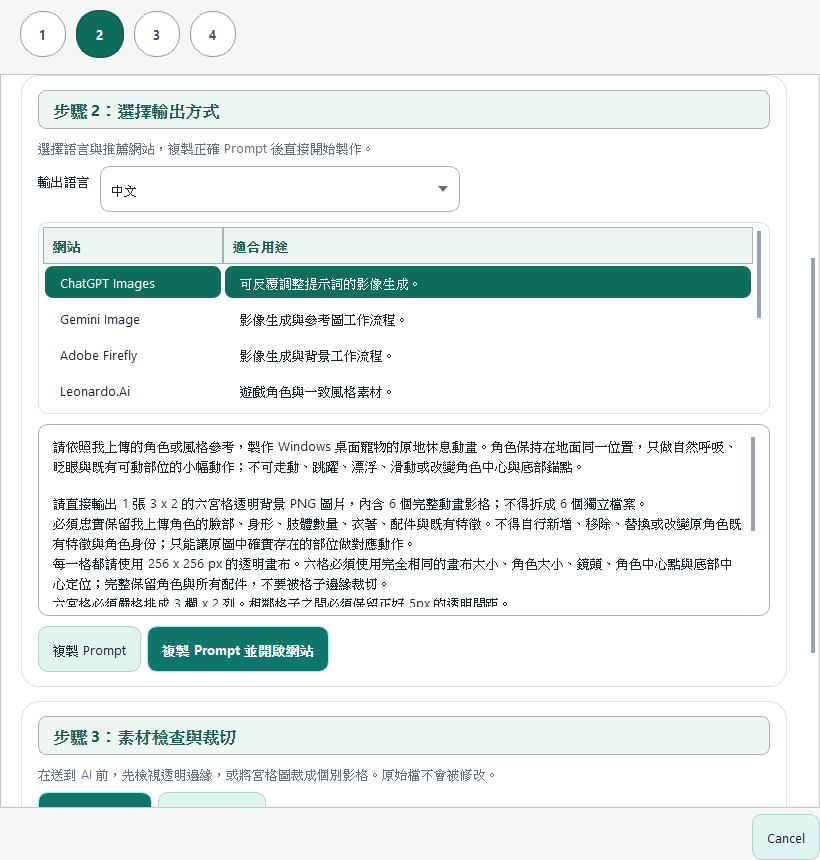
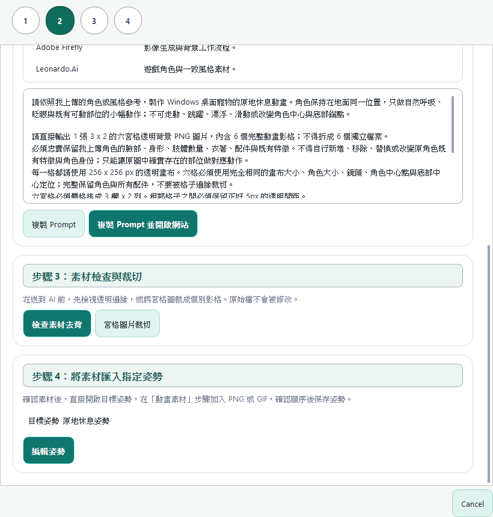
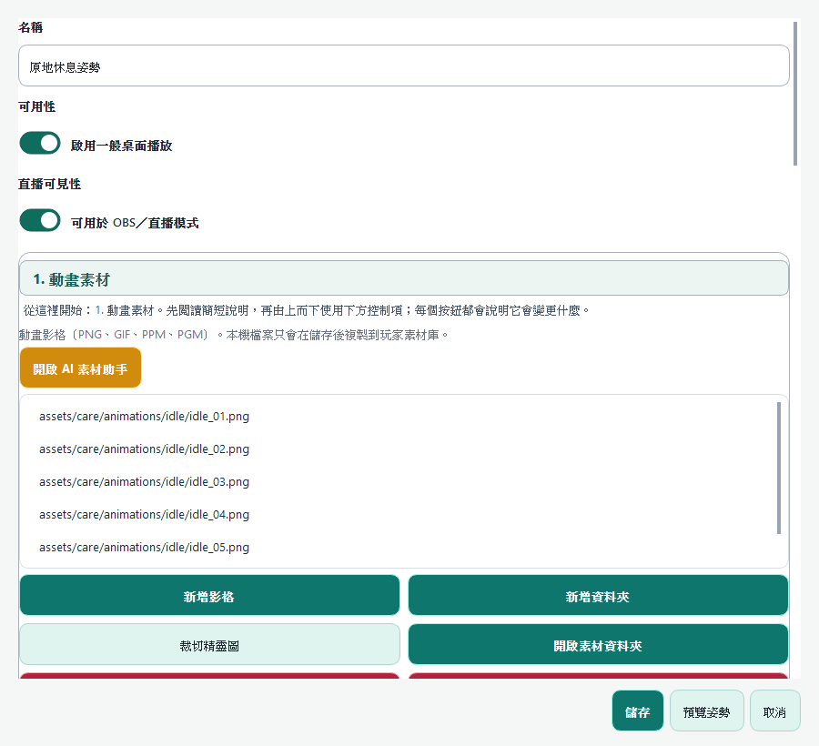
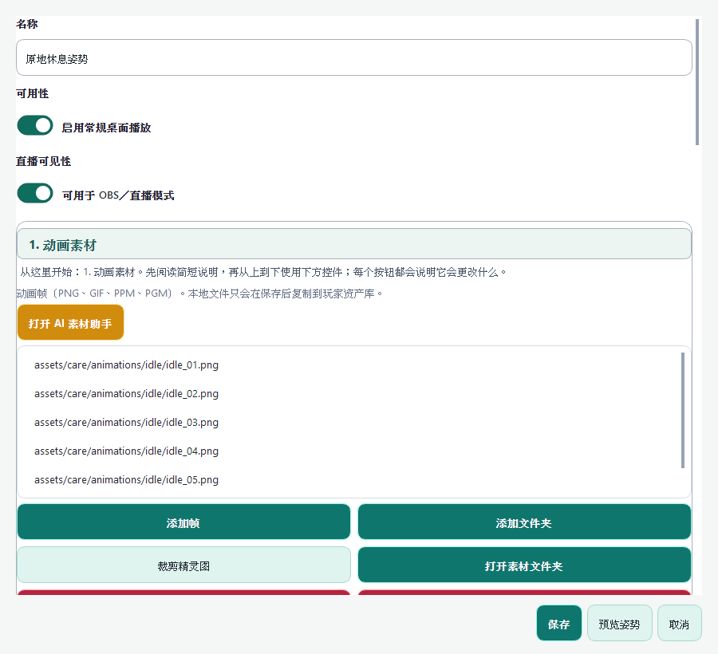
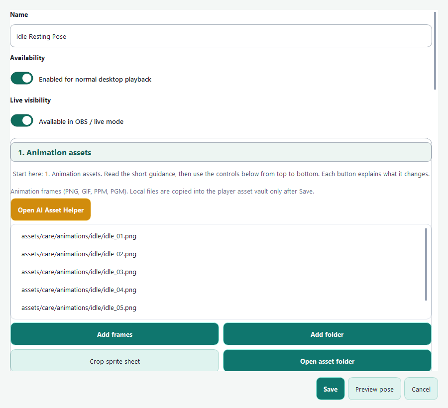

步驟 1
在 AI 素材助手準備角色參考素材
開啟主程式的 AI 素材助手後，先閱讀第一個區塊「步驟 1：準備角色參考素材」。準備能清楚呈現外觀、配色、線條與表情方向的角色圖；可使用你擁有使用權的原創角色、委託作品或風格參考。
完成後：你有一張清楚的參考圖，可以帶進主程式的 AI 素材助手。

MAKE A PET YOUR OWN
跟著主程式的 AI 素材助手，從準備角色參考圖、製作 Prompt、檢查素材，到匯入指定姿勢。每一段都有清楚的下一步。
MAKE A PET YOUR OWN
跟着主程序的 AI 素材助手，从准备角色参考图、制作 Prompt、检查素材，到导入指定姿势。每一步都有清楚的下一步。
MAKE A PET YOUR OWN
Follow the app's AI Asset Helper from reference art and a Prompt, through asset checking, to importing the result into a target pose. Every step makes the next one clear.
A CLEAR FOUR-STEP PATH
這是網站導覽，不會把素材上傳到網站，也不會替你呼叫 AI。實際製作、檢查與匯入都在你的 Windows 電腦上完成。
A CLEAR FOUR-STEP PATH
这是网站导览，不会把素材上传到网站，也不会替你调用 AI。实际制作、检查与导入都在你的 Windows 电脑上完成。
A CLEAR FOUR-STEP PATH
This is a website guide. It does not upload your assets or call an AI service. Creation, checking, and import all happen on your Windows computer.
步驟 1
開啟主程式的 AI 素材助手後，先閱讀第一個區塊「步驟 1：準備角色參考素材」。準備能清楚呈現外觀、配色、線條與表情方向的角色圖；可使用你擁有使用權的原創角色、委託作品或風格參考。
完成後：你有一張清楚的參考圖，可以帶進主程式的 AI 素材助手。

步驟 2
在「Prompt 模板」清單選擇要製作的姿勢，例如原地休息、走動或右鍵姿勢。主程式已提供對應模板；選好輸出語言後，直接按「複製 Prompt」，再貼到你選擇的 AI 網站。
模板會建議 AI 產出至少 6 格的宮格動畫圖片，每一格使用相同畫布尺寸與中心點。6 格是建議的最低數量；想讓動作更細緻，可以請 AI 產出更多格數，再到下一步用「宮格圖片裁切」拆成獨立影格。
姿勢工作台可依序匯入多張 PNG，也支援 GIF、PPM、PGM；透明 PNG 最適合逐格調整與替換。
完成後：你會得到可直接使用的 Prompt 模板，以及清楚的宮格輸出與裁切方式。

步驟 3
用「檢查素材去背」在不同背景色上檢視透明邊緣。若拿到的是模板建議的宮格圖片，使用「宮格圖片裁切」輸入實際影格數、調整可拖曳的裁切範圍，再選擇輸出資料夾。
這兩項工具都只會建立新的 PNG 檔，不會改寫原圖。完成後即可進入指定姿勢的編輯畫面。
完成後：你有一組已檢查、可放心匯入的素材；走動圖請使用朝右影格，向左移動會由系統自動鏡像。

步驟 4
在「將素材匯入指定姿勢」按下「編輯姿勢」，主程式會開啟對應姿勢的編輯畫面。到「動畫素材」加入裁切完成的多張 PNG，或直接加入 GIF、PPM、PGM、資料夾，確認順序後儲存姿勢。
這一步不會自動覆蓋你的既有姿勢或素材。你可以先預覽，再自行決定要保留、替換或新增動畫。
完成後：你的新素材已套用到指定姿勢，接著可設定播放速度、氣泡、音效與觸發方式。

步骤 1
打开主程序的 AI 素材助手后，先阅读第一个区块「步骤 1：准备角色参考素材」。准备能清楚呈现外观、配色、线条与表情方向的角色图；可使用你拥有使用权的原创角色、委托作品或风格参考。
完成后：你有一张清楚的参考图，可以带进主程序的 AI 素材助手。
步骤 2
在“Prompt 模板”列表选择要制作的姿势，例如原地休息、走动或右键姿势。主程序已提供对应模板；选择输出语言后，直接点击“复制 Prompt”，再粘贴到你选择的 AI 网站。
模板会建议 AI 生成至少 6 格的宫格动画图片，每一格使用相同画布尺寸与中心点。6 格是建议的最低数量；想让动作更细腻，可以请 AI 生成更多格数，再到下一步用“宫格图片裁切”拆成独立帧。
姿势工作台可依序导入多张 PNG，也支持 GIF、PPM、PGM；透明 PNG 最适合逐帧调整与替换。
完成后：你会得到可直接使用的 Prompt 模板，以及清楚的宫格输出与裁切方式。
步骤 3
用“检查素材去背”在不同背景色上查看透明边缘。如果拿到的是模板建议的宫格图片，使用“宫格图片裁切”输入实际帧数、调整可拖动的裁切范围，再选择输出文件夹。
这两项工具都只会建立新的 PNG 文件，不会改写原图。完成后即可进入指定姿势的编辑画面。
完成后：你有一组已检查、可放心导入的素材；走动图请使用朝右帧，向左移动会由系统自动镜像。
步骤 4
在“将素材导入指定姿势”点击“编辑姿势”，主程序会打开对应姿势的编辑页面。到“动画素材”加入裁切完成的多张 PNG，或直接加入 GIF、PPM、PGM、文件夹，确认顺序后保存姿势。
这一步不会自动覆盖你已有的姿势或素材。你可以先预览，再自行决定要保留、替换或新增动画。
完成后：你的新素材已套用到指定姿势，接着可设置播放速度、气泡、音效与触发方式。

Step 1
Open the app's AI Asset Helper and start with its first card, “Step 1: Prepare character reference material.” Choose art that clearly shows the character's appearance, palette, line work, and expression direction; use only original, commissioned, or style-reference art you are allowed to use.
Finished: You have one clear reference image ready for the app's AI Asset Helper.
Step 2
Choose the pose you want from the Prompt Template list, such as idle, walk, or a right-click pose. The app provides a matching template. Choose an output language, click “Copy Prompt”, then paste it into the AI site you prefer.
The template asks the AI for a grid animation image with at least six cells, using the same canvas size and center point for every cell. Six is the recommended minimum. For smoother motion, ask for more cells, then split them into individual frames with “Crop grid image” in the next step.
The Pose Workspace can import multiple PNGs in sequence and also supports GIF, PPM, and PGM. Transparent PNG is best for frame-by-frame adjustment and replacement.
Finished: You have a copy-ready Prompt template and a clear grid-output and cropping workflow.
Step 3
Use “Check background removal” to inspect transparent edges against different background colors. For the grid image suggested by the template, use “Crop grid image” to enter the actual frame count, adjust the draggable crop areas, and choose an output folder.
Both tools create new PNGs and never overwrite the source. When finished, open the editor for the target pose.
Finished: You have a checked, import-ready asset set. For walking, use right-facing frames; the app mirrors them automatically when moving left.
Step 4
Choose “Edit pose” under “Import assets into the target pose”. The app opens that pose's editor. Under “Animation assets”, add the cropped PNG frames, or add a GIF, PPM, PGM, or a folder directly. Confirm their order, then save the pose.
This step never automatically overwrites an existing pose or its assets. Preview first, then decide whether to keep, replace, or add an animation.
Finished: Your new art is applied to the target pose. You can then set playback speed, bubbles, sound, and trigger behavior.

READY FOR THE DESKTOP
匯入影格或 GIF 後，設定播放速度、氣泡、音效與觸發方式。想把整套角色與玩法分享給其他玩家，也可以再前往工作坊頁整理內容。
READY FOR THE DESKTOP
导入帧或 GIF 后，设置播放速度、气泡、音效与触发方式。想把整套角色与玩法分享给其他玩家，也可以再前往创意工坊页面整理内容。
READY FOR THE DESKTOP
After importing frames or a GIF, set playback speed, bubbles, sound, and triggers. When you are ready to share a complete character and gameplay, organize it on the Workshop page.